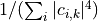
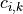
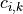

Inverse Participation Ratio (qTools.QuantumToolbox._ipr)¶
Contains functions to calculate delocalisation measure (Inverse participation ratio, shortly IPR) in various cases.
Functions¶
|
Calculates inverse participation ratio  of a ket |
|
Calculates the IPR |
 by using each entry  as a complex amplitude.
by using each entry  as a complex amplitude.-
iprKet(basis: List[Union[scipy.sparse.base.spmatrix, numpy.ndarray]], ket: Union[scipy.sparse.base.spmatrix, numpy.ndarray]) → float[source]¶ Calculates inverse participation ratio of a ket
 in a given basis
in a given basis  . The complex probability
amplitudes satisfy
. The complex probability
amplitudes satisfy  , therefore IPR = 1 is perfectly localised, and
IPR =
, therefore IPR = 1 is perfectly localised, and
IPR =  is uniformly localised in
is uniformly localised in  dimensional space.
dimensional space.- Parameters
basis (matrixList) – a ket state
ket (Matrix) – a complete basis
- Returns
inverse participation ratio
- Return type
float
Examples
>>> completeBasis = completeBasis(dimension=2) >>> state0 = normalise(0.2*basis(2, 0) + 0.8*basis(2,1)) >>> iprKet(completeBasis, state0) 1.1245136186770428 >>> state1 = normalise(0.5*basis(2, 0) + 0.5*basis(2,1)) >>> iprKet(completeBasis, state1) 2.000000000000001 >>> state2 = basis(2,1) >>> iprKet(completeBasis, state2) 1.0
-
iprKetNB(ket: Union[scipy.sparse.base.spmatrix, numpy.ndarray]) → float[source]¶ Calculates the IPR
 of a ket
of a ket  by using each entry as a complex amplitude.
by using each entry as a complex amplitude.- Parameters
ket (Matrix) – a ket state
- Returns
inverse participation ratio
- Return type
float
Examples
>>> state0 = normalise(0.2*basis(2, 0) + 0.8*basis(2,1)) >>> iprKetNB(state0) 1.1245136186770428 >>> state1 = normalise(0.5*basis(2, 0) + 0.5*basis(2,1)) >>> iprKetNB(state1) 2.000000000000001 >>> state2 = basis(2,1) >>> iprKetNB(state2) 1.0 >>> state3 = basis(2,0) >>> iprKetNB(state3) 1.0